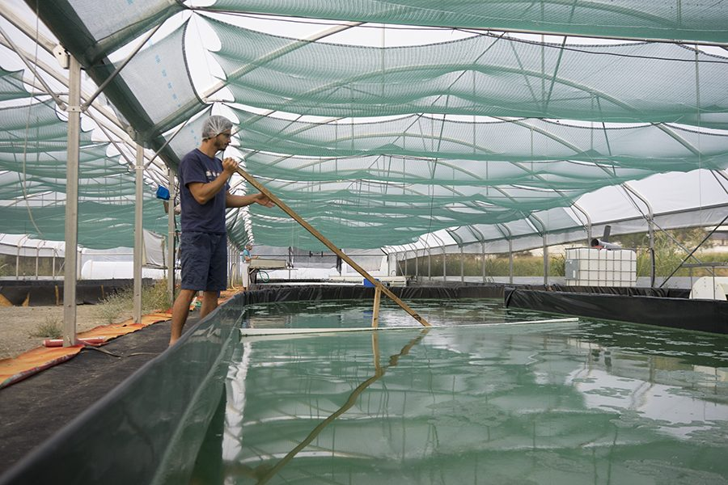

La spiruline
Une micro-algue aux propriétés nutritionnelles exceptionnelles, cultivée depuis des millénaires et reconnue par de nombreux organismes internationaux.

Une micro-algue aux propriétés nutritionnelles exceptionnelles, cultivée depuis des millénaires et reconnue par de nombreux organismes internationaux.
La spiruline (Spirulina platensis) est l'une des plus anciennes formes de vie sur Terre. Cette cyanobactérie pousse naturellement dans les lacs riches en minéraux en climat chaud, comme le lac Lonar en Inde. Elle était déjà consommée par les Aztèques au Méxique et les populations du lac Tchad en Afrique sous forme de galettes séchées.
En 1964, le botaniste belge Jean Léonard, en mission pour l'ONU au Tchad, observe les populations locales consommer ces galettes vertes et les fait analyser. Il découvre qu'elles sont constituées à plus de 70% de spiruline — point de départ de la recherche scientifique moderne.
Reconnue par la FAO, l'OMS, l'UNESCO et la FDA comme un "aliment de santé supérieur du 21e siècle", elle a été étudiée par la NASA pour les missions spatiales. Elle a contribué à la création de l'atmosphère terrestre il y a 3,5 milliards d'années.
La spiruline n'est pas un médicament. Bénéfices fondés sur des études scientifiques publiées.

Valeurs issues de la Fédération des Spiruliniers de France (FSF). Comparaisons basées sur les valeurs moyennes du CIQUAL (ANSES) — indicatives.
Elle s'adresse à chacun, quel que soit son mode de vie.

Récupération, endurance et protéines complètes pour la performance.
Protéines et vitamines B d'origine végétale, complètes et assimilables.
Fer, magnésium et vitamines B pour retrouver vitalité et énergie.
Préservation de la masse musculaire et apport en minéraux essentiels.

Complément quotidien pour renforcer ses défenses et se sentir mieux.
Séchée à 40°C maximum, elle conserve l'intégralité de ses nutriments. Les spirulines industrielles séchées à haute température perdent une partie de leurs vitamines thermosensibles.
Réalisées chaque année par un laboratoire accrédité. Aucune obligation légale ne nous y contraint — c'est notre choix de qualité. De nombreuses spirulines importées ne font l'objet d'aucun contrôle indépendant.
Sans pesticides, sans OGM, en eau douce potable de Chartreuse. Contrôlée et certifiée AB chaque année.

Les questions que vous vous posez, avec des réponses claires.
© 2025 GAEC Char'Algue — Spiruline de Chartreuse — SIRET 83044121800013 — TVA FR13830441218 — Hébergeur : Vercel Inc., 340 S Lemon Ave #4133, Walnut, CA 91789, USA